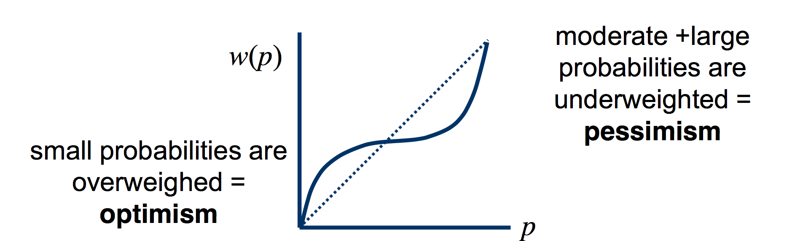

Question: Consider the prospects \[A = (1, €3000), B = (0.8, €4000; 0.2, \$0), C = (0.25, €3000 0.75, 0), and D = (0.2, €4000; 0.8, 0).\] It has been found that most people prefer prospect A over prospect B and prospect D over prospect C. Show that Disappointment theory as presented and parameterised in the book (p.100) can accommodate the observed choice pattern.
Answer: \[L = (p_1: x_1, p_2: x_2, \ldots , p_n: x_n )\]
\[DT(L) = \sum_i p_i [u(x_i) + D(u(x_i)- prior)]\]
Assume liner utility \((U(x) = x)\), and:
- if outcome is above \(EV, D=0.0002\times(x-EU)^2\) - if outcome is below \(EV, D=0.0002\times(x-EU)^2\)
For A:
\(EV=EU=3000\)
\(Prospect \hspace{2mm} A = 1 \times (3000 + 0.0002 \times (3000 - 3000)^2)) = 3000\)
For B:
\(EV=EU=3200\)
\(Prospect \hspace{2mm} B = 0.8 \times (4000 + 0.0002 \times (4000 - 3200)^2)) + 0.2 \times (0 - 0.0002 \times (0 - 3200)^2)) = 2892,8\)
Hence: \(Prospect \hspace{2mm} A > Prospect \hspace{2mm} B\)
For C:
\(EV=EU=750\)
\(Prospect \hspace{2mm} C = 0.25 \times (3000 + 0.0002 \times (3000 - 750)^2)) + 0.75 \times (0 - 0.0002 \times (0 - 750)^2)) = 918,75\)
For D:
\(EV=EU=800\)
\(Prospect \hspace{2mm} D = 0.2 \times (4000 + 0.0002 \times (4000 - 800)^2)) + 0.8 \times (0 - 0.0002 \times (0 - 800)^2)) = 1107,2\)
Hence: \(Prospect \hspace{2mm} D > Prospect \hspace{2mm} C\)
Hence, we conclude that disappointment theory can accommodate the observed choice pattern.
